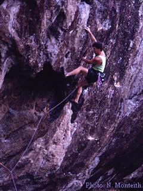

By Lee Skidmore, February 2000
Last updated 24 March, 2000

| Serpent Climbing Guide |
By Lee Skidmore, February 2000 Last updated 24 March, 2000 |
|
|
|
|
INTRODUCTION
HISTORY
With the terrain more vertical than overhung, Shotgun Wall offered many new routes around the low to mid 20s to be established. One of the hardest routes to grace this wall so far is Gareth Llewellin's Pump Action (25) that ascends a steep wall of beautiful, scooped rock. |
 |
|
Above: Darrin Carter on Minotaur (18) |
GUIDEBOOK
The Serpent 'Guidelet'
is currently in production. The guidelet will contain descriptions of all of the routes to date (over
50), as well as access info, a detailed history of the crag, and good photos. This is a must-buy if you intend on going to the area and
when it is released, it will be able to be purchased from K2 Base Camp in Fortitude Valley, Brisbane.
THE CLIMBING
Serpent Wall is about 50m long and is
severely overhung in its lower portion. The rock is black volcanic trachyte and forms excellent pockets and crimps. The namesake of the wall
is the large, eaten-out cave with stalactites which looks like a serpent's
maw. The "technical chimney" route Stingray (22) climbs through these.
Shotgun Wall is located up the hill from Serpent and has over six climbs with new development going on all the time. The climbing is on vertical rock which is water-scooped in places. There is a wall between Serpent and Shotgun on an upper terrace (scramble up). This is Circus Wall and amongst other things, is home to Carter's thin seam Bo Bo's A Clown (17) and Chris Finn's Ferris Wheel (15) and Snake Charmer (20) which climbs through an interesting roof/cave section.
The majority of routes are between 15m and 30m in length and rely on bolts with fixed hangers for protection, although many routes require the odd wire or SLCD. Take quickdraws, an average rack and some bolt brackets.
ACCESS
The area is located
about 140km north Brisbane in the Blackhall
Range. Take the Kenilworth turnoff (marked Tourist Drive 22) left and
follow the road for 22km to the Gheerulla
State Forest. Turn left onto Sam Kelly Road (dirt).
The walk should take around 15-25 minutes depending on fitness level. Follow the track which crosses the creek and leads to an intersection of walking track and motorbike track. Go straight ahead and follow a vague track leading leftwards until you reach another intersection. Turn right and walk along a dirt road for approximately 100m until you see a large fallen tree with a prominent saw-cut end facing you. Turn left and march off the road, up a steep incline on a vague track. When you reach the ridge, turn right and follow the ridge up to Serpent.
[Go to Serpent Climbing Gallery]